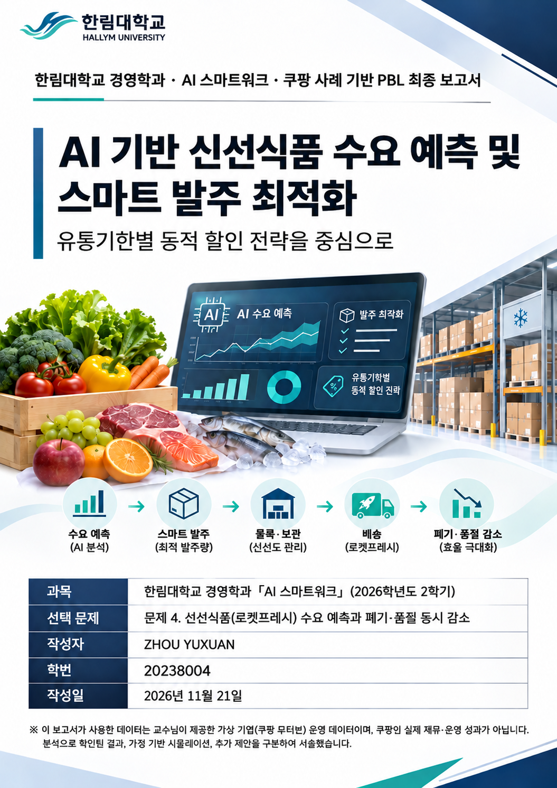

그림 01
차트 제목
그래프 설명이 표시됩니다.
과거 실측 폐기율 9.79%와 12.52억 원의 경제적 손실을 극복하기 위해, HistGradientBoosting 기반의 AI 수요 예측과 Newsvendor 발주 최적화, 그리고 유통기한별 동적 할인 PoC를 결합한 차세대 물류 공급망 솔루션입니다.

실제 유통 물류의 복잡한 비즈니스 제약을 이해하고, 데이터 분석과 생성형 AI 협업을 통해 실행 가능한 해법을 도출했습니다.
[전공 / 소속]
안녕하세요. 본 프로젝트는 2개 물류센터 30개 SKU의 181일간 가상 시나리오 데이터(10,860행)를 바탕으로, 기존의 정적 발주 룰이 초래한 9.79%의 폐기와 2.38%의 품절 문제를 해결하기 위해 시작되었습니다. Python 기반의 머신러닝 수요 예측부터 한계비용 기반 Newsvendor 최적화, 그리고 유통기한별 동적 할인 알고리즘까지 전 과정을 주도적으로 수행했습니다.
신선식품은 극히 짧은 유통기한과 날씨·요일·프로모션 등 높은 수요 변동성으로 인해, 과잉 발주와 과소 발주의 딜레마가 지속적으로 반복됩니다.
실측 데이터 관측 결과부터 AI 예측 오차 개선, 그리고 단일기간 시뮬레이션의 성과와 한계(품절 증가)를 투명하게 공개합니다.
2개 물류센터 30개 SKU의 1~6월 과거 실측 평균치. 유통기한 1~3일 품목에서 폐기 집중 발생.
프로모션 및 특정 요일 수요 급증 시점에 발생한 결품으로 매출 기회 손실 유발.
관측 기간 전체 폐기 원가 손실과 품절 기회손실의 총합계로 산출된 재무적 영향.
기존 시스템 대비 오차 5.91%p 대폭 개선 (기온 변수 제외 HistGradientBoosting 모델 채택).
Newsvendor 발주 최적화 적용 시 단일기간 시뮬레이션 상 미판매 재고 대폭 축소 및 이익 증대.
상충관계(Trade-off) 발생: 잔량 감소의 반작용으로 품절이 증가하여, 품절률 상한을 제약조건으로 두는 보완 모델 필요성 입증.
정확한 수요 예측부터 비용 기반 발주량 결정, 유통기한별 동적 할인, 그리고 서비스 수준 관리까지 단계별 유기적 연결 구조를 구축했습니다.
요일성, 공휴일, 프로모션 유무, 그리고 과거 7일·14일·28일 롤링 수요 통계량을 시계열 누수 없이 학습했습니다. 기존 단순 가산 규칙(+12%)의 고질적인 상시 과잉 예측 편향을 해소하고 WAPE를 12.75%로 낮췄습니다.
품목별 판매마진(부족비용 Cu)과 폐기원가(과잉비용 Co)를 기반으로 임계확률(Critical Fractile = Cu / (Cu + Co))을 계산하고, 검증 구간의 잔차 분포를 결합하여 수익을 극대화하는 최적 안전재고 발주량을 산출했습니다.
발주 최적화 후에도 남는 재고를 위해, 잔여 유통기한에 따라 D-2일 15%, D-1일 30%, 당일 50%의 단계별 가격 인하를 적용하는 PoC를 설계했습니다. 가격 민감도에 따른 구매 전환율을 가정한 민감도 시뮬레이션을 수행했습니다.
정책 B 적용 시 단일기간 시뮬레이션에서 품절 수량이 14.7% 증가하는 부작용이 발견되었습니다. 이를 해결하기 위해 서비스 수준(품절률) 상한선을 제약조건으로 부과하는 '제약형 Newsvendor 최적화'를 차기 보완 과제로 제안합니다.
실제 책장을 넘기는 듯한 온라인 플립북(Flipbook) 뷰어와 강의실 오프라인 환경을 위한 로컬 PDF 직접 뷰어를 모두 지원합니다.
온라인 플립북 서비스(예: Heyzine, PubHTML5, FlipHTML5 등)에 원본 PDF를 업로드한 후,
발급받은 iframe 임베드 주소를 website-config.js에 등록하면 페이지 넘김 효과가 있는 인터랙티브 전자책이 활성화됩니다.
P4_final_report.pdf를 다운로드합니다.website-config.js의 ebook.embedUrl에 입력합니다.단순한 프롬프트 생성을 넘어, 각 생성형 AI의 강점을 명확히 분담하고 지속적인 교차 검증을 통해 분석 오류와 시계열 누수를 원천 차단했습니다.
프로젝트 기획 초기 단계에서 인터랙티브 Grill-me 질의응답을 주도하고 문제 정의를 구조화했습니다.
10,860행 가상 데이터를 처리하는 파이썬 분석 파이프라인과 프론트엔드 모션을 구현했습니다.
수치적 정합성을 대조하고 비즈니스 컨설팅 수준의 논리 전개와 보고서 문장을 고도화했습니다.
그래프 설명이 표시됩니다.